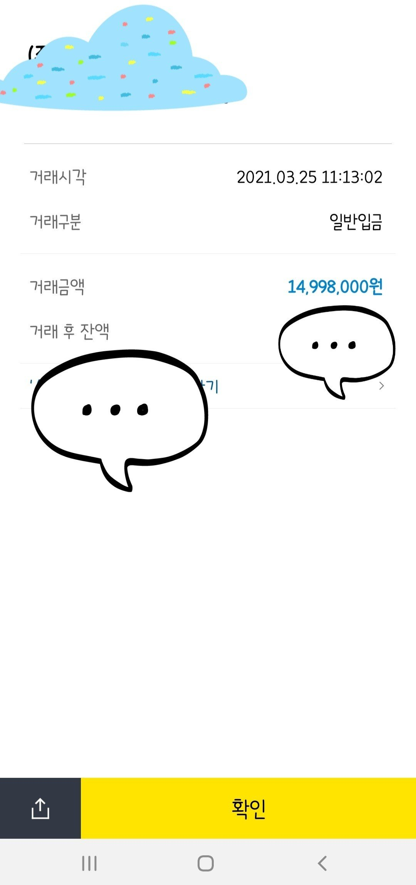

[개인회생자대출] 최규열 이사님 감사드립니다.
직장인(4대보험 유)
재직기간 1년 3개월
월급여 230~250
개인회생 면책 신청 후 기다리는중
대부업 4곳 기대출보유(차량담보포함)
(에* 935/ 태* 539/제* 560/유*1090)
작년에 최규열 이사님께 도움 받고 회생도 마지막회차까지 납부후 면책 기다리고 있는 중 이사님께 다시 도움 요청드렸습니다.
대출건수가 많아 쉽지 않은 상황이었지만 이사님께서 바로 도움주셔서 기존대출 대환조건으로 건수도 3곳으로 줄이고 추가자금까지 확보하게 되었습니다.
면책 후 다시 이사님께 도움 부탁드리겠습니다.
그때도 잘 부탁드리겠습니다^^
도움주셔서 너무나 감사드립니다.
